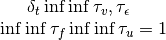
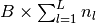

Utilities¶
Contents
General Notes¶
Miscellaneous utilities for performing experiments.
API¶
Command line argument parsing¶
Command-line arguments common to all experiments.
-
utils.args.check_dfc_time_constants(config)[source]¶ Check the time constants for DFC runs.
We need to ensure .
- Parameters
config – The config.
- Returns
The (potentially modified) config.
-
utils.args.check_invalid_args_general(config, network_type)[source]¶ Sanity check for command-line arguments.
- Parameters
config – Parsed command-line arguments.
network_type (str) – The type of network.
-
utils.args.dataset_args(parser, ddataset='mnist', dtarget_class_value=1)[source]¶ This is a helper function of the function
parse_cmd_arguments()to add arguments to the dataset argument group.- Parameters
parser (argparse.ArgumentParser) – Argument parser.
-
utils.args.dfc_args(parser, dinit_fb_epochs=1, dsigma_init=0, dextra_fb_epochs=0, dtarget_stepsize=0.001, depsilon_di=0.5, dtau_f=0.9, dtau_noise=0.8, single_phase=False)[source]¶ This is a helper function of the function
parse_cmd_arguments()to add DFC arguments to the training argument group.- Parameters
parser (argparse.ArgumentParser) – Argument parser.
(...) – Default values for the arguments.
single_phase (bool) – Whether we are doing DFC with a single phase.
- Returns
The created argument group, in case more options should be added.
-
utils.args.miscellaneous_args(mgroup)[source]¶ This is a helper function of the function
parse_cmd_arguments()to add arguments to the miscellaneous argument group.- Parameters
mgroup – The argument group returned by method
utils.cli_args.miscellaneous_args().
-
utils.args.network_args(parser, dsize_hidden='5', dhidden_activation='linear', dinitialization='xavier_normal')[source]¶ This is a helper function of the function
parse_cmd_arguments()to add arguments to the network argument group.- Parameters
parser (argparse.ArgumentParser) – Argument parser.
(...) – Default values for the arguments.
- Returns
The created argument group, in case more options should be added.
-
utils.args.optimizer_args(tgroup, suffix='', dlr='0.1', dmomentum=0, dweight_decay=0, doptimizer='SGD', dbeta1=0.99, dbeta2=0.99, depsilon='1e-8')[source]¶ Optimizer options.
- Parameters
parser (argparse.ArgumentParser) – Argument parser.
suffix (str) – The suffix to be added to the arguments. Can be emtpy, or _fb for the feedback weights in DFC.
(...) – Default values for the arguments.
- Returns
The created argument group, in case more options should be added.
-
utils.args.parse_cmd_arguments(network_type='BP', default=False, argv=None)[source]¶ Parse command-line arguments.
- Parameters
network_type (str) – The network type to be used.
default (optional) – If
True, command-line arguments will be ignored and only the default values will be parsed.argv (optional) – If provided, it will be treated as a list of command- line argument that is passed to the parser in place of sys.argv.
- Returns
The Namespace object containing argument names and values.
-
utils.args.post_process_args(config, network_type)[source]¶ Post process the command line arguments.
- Which kind of stuff is post-processed here for all runs?
reduce number of epochs if we are in a test setting
convert string into lists (for architecture, learning rates)
- Which kind of stuff is post-processed here for DFC runs?
adjust learning rate based on target nudging strength if needed
copy forward phase hyperparameters for feedback phase if not provided
- fill in possibly missing arguments for:
lr_fb_init <- lr_fb
sigma_output <- sigma
sigma_output_fb <- sigma_fb
apical_time_constant <- dt_di
apical_time_constant_fb <- dt_di_fb
remove feedback training if Jacobian is used as feedback.
determine whether dataframe should be stored.
- Parameters
config – Parsed command-line arguments.
network_type (str) – The type of network.
- Returns
The post-processed config.
-
utils.args.student_teacher_args(parser, dnum_train=1000, dnum_val=1000, dnum_test=1000, dteacher_n_in=10, dteacher_n_out=2, dteacher_size_hidden='5')[source]¶ This is a helper function of the function
parse_cmd_arguments()to add arguments to the student-teacher argument group.- Parameters
parser (argparse.ArgumentParser) – Argument parser.
-
utils.args.training_args(parser, network_type, depochs=2, dbatch_size=128, dclip_grad_norm=-1)[source]¶ This is a helper function of the function
parse_cmd_arguments()to add arguments to the training argument group.- Parameters
parser (argparse.ArgumentParser) – Argument parser.
network_type (str) – The type of network.
(...) – Default values for the arguments.
- Returns
The created argument group, in case more options should be added.
Utilities for mathematical computations¶
Functions required for mathematical computations.
-
utils.math_utils.bool_to_indices(bool_vector)[source]¶ Convert an array of boolean indices to integer indices.
- Parameters
bool_vector (torch.Tensor) – A vector of booleans.
- Returns
The list of indices that are
True.- Return type
(list)
-
utils.math_utils.compute_angle(A, B)[source]¶ Compute the angle between two tensors of the same size.
The tensors will be flattened, after which the angle is computed.
- Parameters
A (torch.Tensor) – First tensor.
B (torch.Tensor) – Second tensor.
- Returns
The angle between the two tensors in degrees.
- Return type
(float)
-
utils.math_utils.compute_jacobian(x, y, structured_tensor=False, retain_graph=False)[source]¶ Compute the Jacobian matrix of output with respect to input.
If input and/or output have more than one dimension, the Jacobian of the flattened output with respect to the flattened input is returned if structured_tensor is False. If structured_tensor is True, the Jacobian is structured in dimensions [y_shape, flattened_x_shape]. Note that y_shape can contain multiple dimensions.
- Parameters
x (list or torch.Tensor) – Input tensor or sequence of tensors with the parameters to which the Jacobian should be computed. Important: the requires_grad attribute of input needs to be True while computing output in the forward pass.
y (torch.Tensor) – Output tensor with the values of which the Jacobian is computed.
structured_tensor (bool) – A flag indicating if the Jacobian should be structured in a tensor of shape [y_shape, flattened_x_shape] instead of [flattened_y_shape, flattened_x_shape].
- Returns
- 2D tensor containing the Jacobian of output with
respect to input if structured_tensor is False. If structured_tensor is True, the Jacobian is structured in a tensor of shape [y_shape, flattened_x_shape].
- Return type
-
utils.math_utils.contains_nan(x, max_value=inf)[source]¶ Check whether a tensor contains a NaN or an infinity value.
- Parameters
x (torch.Tensor or list) – The input.
max_value (float) – The highest acceptable value.
- Returns
Whether the tensor contains a NaN or infinity.
- Return type
(bool)
-
utils.math_utils.cross_entropy(predictions, targets)[source]¶ Home-made implementation of the cross-entropy.
The mean or sum reduction is applied outside.
- Parameters
predictions (torch.Tensor) – The predictions.
targets (torch.Tensor) – The targets.
reduction (str) – The type of reduction: mean or sum.
- Returns
The loss for all items in the mini-batch.
- Return type
(float)
-
utils.math_utils.cross_entropy_fn(reduction='mean')[source]¶ Wrapper for the cross entropy function.
We reimplement the cross-entropy so that we can use soft targets. For non one-hot-encodings or soft labels, we use Pytorch’s native implementation.
- Parameters
reduction (str) – The type of reduction: mean or sum.
- Returns
The loss function.
-
utils.math_utils.derivative_leakyrelu(x)[source]¶ Compute the derivative of the leaky relu for a given input.
- Parameters
x (torch.Tensor) – The input.
- Returns
The derivative at the input.
- Return type
-
utils.math_utils.derivative_relu(x)[source]¶ Compute the derivative of the relu for a given input.
- Parameters
x (torch.Tensor) – The input.
- Returns
The derivative at the input.
- Return type
-
utils.math_utils.derivative_sigmoid(x)[source]¶ Compute the derivative of the sigmoid for a given input.
- Parameters
x (torch.Tensor) – The input.
- Returns
The derivative at the input.
- Return type
-
utils.math_utils.derivative_tanh(x)[source]¶ Compute the derivative of the tanh for a given input.
- Parameters
x (torch.Tensor) – The input.
- Returns
The derivative at the input.
- Return type
-
utils.math_utils.euclidean_dist(v1, v2, axis=None)[source]¶ Compute the Euclidean distance between two vectors.
If only 1D vectors, a scalar is returned. If a 2D or 3D matrix is fed, the first dimension is interpreted as time and vector/matrix distance is computed along it.
- Parameters
v1 (torch.Tensor) – The first vector.
v2 (torch.Tensor) – The second vector.
axis (int) – The axis along which to compute the norm.
- Returns
The distance.
-
utils.math_utils.flatten_list(unflattened_list)[source]¶ Flatten list possibly containing lists within elements.
-
utils.math_utils.get_activation_from_id(nl_id, grad=True)[source]¶ From the activation id, return the function.
- Parameters
nl_id (int) – The non-linearity id.
grad (boolean) – Whether to return to gradient function instead of the activation itself.
- Returns
The nonlinearity function.
-
utils.math_utils.get_jacobian_slice(network, layer_idx)[source]¶ Returns the start and end indices of the columns in J that correspond to the network layer with index layer_idx.
- Parameters
network – The network.
layer_idx (int) – The index of the layer.
- Returns
Tuple containing:
neuron_index_start: The index of the first neuron of the layer.
neuron_index_end: The index of the last neuron of the layer.
- Return type
(…)
-
utils.math_utils.nullspace(A, tol=1e-12)[source]¶ Compute the nullspace of a certain matrix.
- Parameters
A (torch.Tensor) – A matrix.
tol (float) – The tolerance level for determining what the nullspace is.
- Returns
A matrix with vectors in the nullspace.
- Return type
-
utils.math_utils.nullspace_relative_norm(A, x, tol=1e-12)[source]¶ Compute the ratio between the norm of components of x that are in the nullspace of A and the norm of x.
- Parameters
A (torch.Tensor) – A matrix.
x (torch.Tensor) – A certain vector.
tol (float) – The tolerance level for determining what the nullspace is.
- Returns
The ratio.
- Return type
(float)
-
utils.math_utils.outer(v1, v2)[source]¶ Compute the outer product between two vectors.
Simple wrapper to deal with several torch versions.
- Parameters
v1 – The first vector.
v2 – The second vector.
- Returns
The outer product.
- Return type
-
utils.math_utils.split_in_layers(network, layers_concat)[source]¶ Split a Tensor containing the concatenated layer activations.
Split a Tensor containing the concatenated layer activations for a minibatch into a list containing the activations of layer
iat indexi.- Parameters
network – The network.
layers_concat (torch.Tensor) – A tensor of dimension  containing the concatenated layer activations..
- Returns
- A list containing values of
layers_concatcorresponding to the activations of layer
iat indexi.
- A list containing values of
- Return type
(list)
Helper functions for building optimizers¶
A collection of functions for building a custom set of optimizers.
-
class
utils.optimizer_utils.OptimizerList(params_list, lr=0.001, optimizer_type='SGD', network_type='BP', no_bias=False, momentum=0, weight_decay=0, adam_beta1=0.99, adam_beta2=0.99, adam_epsilon=1e-08)[source]¶ Bases:
objectAn optimizer instance that handles layer-specific specifications.
This class stacks a separate optimizer for each layer in a list. If no separate learning rates per layer are required, a single optimizer is stored in the optimizer list.
- Parameters
params_list (list) – The parameters to be optimized.
lr (float) – The learning rate.
network_type (str) – The type of network.
optimizer_type (str) – The optimizer type.
no_bias (boolean) – Whether no bias terms are learned.
momentum (boolean) – The momentum value.
forward_wd (boolean) – The forward weight decay value.
adam_beta1 (float) – beta1 value for Adam.
adam_beta2 (float) – beta2 value for Adam.
adam_epsilon (float) – epsilon value for Adam.
-
log_info(logger, opt_loc='')[source]¶ Display information about optimizer.
- Parameters
logger – The logger.
opt_loc (str) – The type of optimizer (forward, feedback…).
-
utils.optimizer_utils.build_optimizer(params, optimizer_type='SGD', lr=0.001, weight_decay=0, momentum=0, adam_beta1=0.99, adam_beta2=0.99, adam_epsilon=1e-08)[source]¶ Build optimizer given a certain set of parameters to be optimized.
This function can be used for building forward and backward optimizers.
- Parameters
params – The parameters to be optimized.
optimizer_type (str) – The name of the optimizer.
lr (float) – The learning rate.
weight_decay (float) – The weight decay.
momentum (float) – The momentum for SGD and RMSprop optimizers.
adam_beta1 (float) – beta1 value for Adam.
adam_beta2 (float) – beta2 value for Adam.
adam_epsilon (float) – epsilon value for Adam.
- Returns
The optimizer.
-
utils.optimizer_utils.extract_parameters(net, config, network_type, params_type='forward', return_nones=False)[source]¶ Extract list of parameters to be optimized.
This function can utilize the native functions of the networks that directly provide the list of parameters, but here we additionally look at the command line arguments and see whether some options freeze certain of those parameters.
By default, a list of the parameters to be learned is returned. However, if the option return_nones is activated, the list of parameters might have None for those layer parameters that exist but shouldn’t be learned. This is useful, for example, when generating the optimizer in case there is a per-layer learning rate.
Helper functions for simulations¶
A collection of helper functions for simulations to keep other scripts clean.
-
utils.sim_utils.add_summary_to_writer(config, shared, writer, epoch)[source]¶ Write information of training into the writer.
- Parameters
config – The command line arguments.
shared – The shared object.
train_var – The training results.
epoch (int) – The current epoch.
-
utils.sim_utils.backup_cli_command(config)[source]¶ Write the curret CLI call into a script.
This will make it very easy to reproduce a run, by just copying the call from the script in the output folder. However, this call might be ambiguous in case default values have changed. In contrast, all default values are backed up in the file
config.json.- Parameters
config – Command-line arguments.
-
utils.sim_utils.get_summary_keys(classification)[source]¶ Get the required summary keys for the experiment.
- Parameters
classification (boolean) – Whether it is a classification task.
- Returns
The list of keys.
-
utils.sim_utils.initialize_train_var_holder(config, network_type)[source]¶ Initialize a holder for all training results collected.
- Parameters
config – The command line arguments.
network_type (str) – The type of network.
- Returns
The variable holder.
- Return type
(Namespace)
-
utils.sim_utils.list_to_str(list_arg, delim=' ')[source]¶ Convert a list of numbers into a string.
- Parameters
list_arg – List of numbers.
delim (optional) – Delimiter between numbers.
- Returns
List converted to string.
-
utils.sim_utils.log_stats_to_writer(config, writer, step, net, init=False)[source]¶ Save logs and plots for the current mini-batch on tensorboardX.
Saves information about feedback and forward weights.
- Parameters
config (Namespace) – commandline arguments
writer (SummaryWriter) – TensorboardX summary writer
step – global step
net (networks.DTPNetwork) – network.
init (bool) – flag indicating that the training is in the initialization phase (only training the feedback weights).
-
utils.sim_utils.save_summary_dict(config, shared, epoch=None)[source]¶ Write a text file in the result folder that gives a quick overview over the results achieved so far.
- Parameters
(...) – See docstring of function
setup_summary_dict().epoch (int) – The current epoch. If provided, it will generate another performance summary file that will not be overwritten.
-
utils.sim_utils.setup_environment(config)[source]¶ Set up the environment.
This function should be called at the beginning of a simulation script (right after the command-line arguments have been parsed). The setup will incorporate:
creates the output folder
initializes the logger
makes computation deterministic if necessary
selects the torch device
creates Tensorboard writer
stores the command line arguments
- Parameters
config – Command-line arguments.
- Returns
Tuple containing:
device: Torch device to be used.
writer: Tensorboard writer. Note, you still have to close the writer manually!
logger: Console (and file) logger.
- Return type
(tuple)
-
utils.sim_utils.setup_summary_dict(config, shared, network_type)[source]¶ Setup the summary dictionary that is written to the performance summary file (in the result folder).
This function adds this summary dictionary to the shared object.
- Parameters
config – Command-line arguments
shared – A structure to share important run information.
network_type (str) – The type of network.
- Returns
The shared structure with the empty dictionary added.
-
utils.sim_utils.update_summary_info(config, shared, network_type)[source]¶ Write information of training into the summary dictionary.
Write information into summary and save new summary.
- Parameters
config – The command line arguments.
shared – The shared object.
network_type (str) – The type of network.
- Returns
The shared object with the summary updated.
- Return type
shared
Helper functions for training and testing networks¶
A collection of functions for training and testing networks.
-
utils.train_utils.compute_accuracy(predictions, labels)[source]¶ Compute the average accuracy of the given predictions.
Inspired by https://pytorch.org/tutorials/beginner/blitz/cifar10_tutorial.html
- Parameters
predictions (torch.Tensor) – Tensor containing the output of the linear output layer of the network.
labels (torch.Tensor) – Tensor containing the labels of the mini-batch.
- Returns
Average accuracy of the given predictions.
- Return type
(float)
-
utils.train_utils.test(config, logger, device, writer, shared, dloader, net, loss_fn, network_type, data_split='test')[source]¶ Test the network.
-
utils.train_utils.train(config, logger, device, writer, dloader, net, optimizers, shared, network_type, loss_fn)[source]¶ Train the network.
- Parameters
config – The command-line arguments.
logger – The logger.
device – The cuda device.
writer – The tensorboard writer.
dloader – The dataset.
net – The network.
optimizers – The optimizers.
shared – Shared object with task information.
network_type (str) – The type of network.
loss_fn – The loss function.
- Returns
The shared object containing summary information.
- Return type
(dict)
-
utils.train_utils.train_epoch_forward(config, logger, device, writer, shared, dloader, net, optimizers, loss_fn, network_type, epoch=None)[source]¶ Train forward weights for one epoch.
For backpropagation, remember that forward and feedback parameters are one and the same, so this function is equivalent to normal training.
- Parameters
config (Namespace) – The command-line arguments.
logger – The logger.
device – The PyTorch device to be used.
writer (SummaryWriter) – TensorboardX summary writer to save logs.
shared – Shared object with task information.
dloader – The dataset.
net – The neural network.
optimizers (dict) – The optimizers.
loss_fn – The loss function to use.
network_type (str) – The type of network.
epoch – The current epoch.
- Returns
Tuple containing:
epoch_losses: The list of losses in all batches of the epoch.
- epoch_accs: The list of accuracies in all batches of the epoch.
Nonefor non classification tasks.
- Return type
(…)
Helper functions for plotting¶
A collection of functions for plotting.
-
utils.plt_utils.plot_auto_reconstructions(config, writer, inputs, predictions, num_images=5)[source]¶ Plot MNIST autoencoding reconstructions.
- Parameters
config – The config.
writer – The tensorboard writer.
inputs (torch.Tensor) – The inputs.
predictions (torch.Tensor) – The predictions.
num_images (int) – The number of images to print.